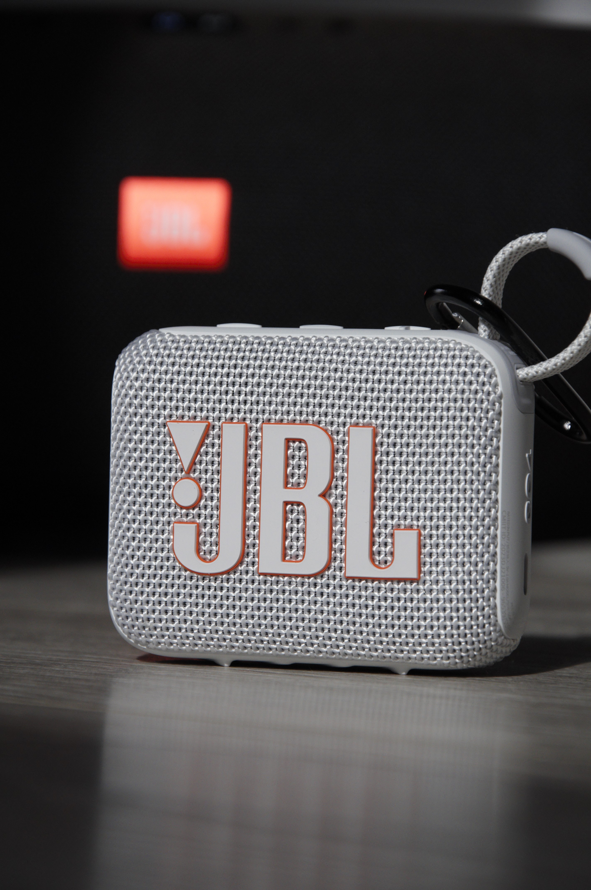
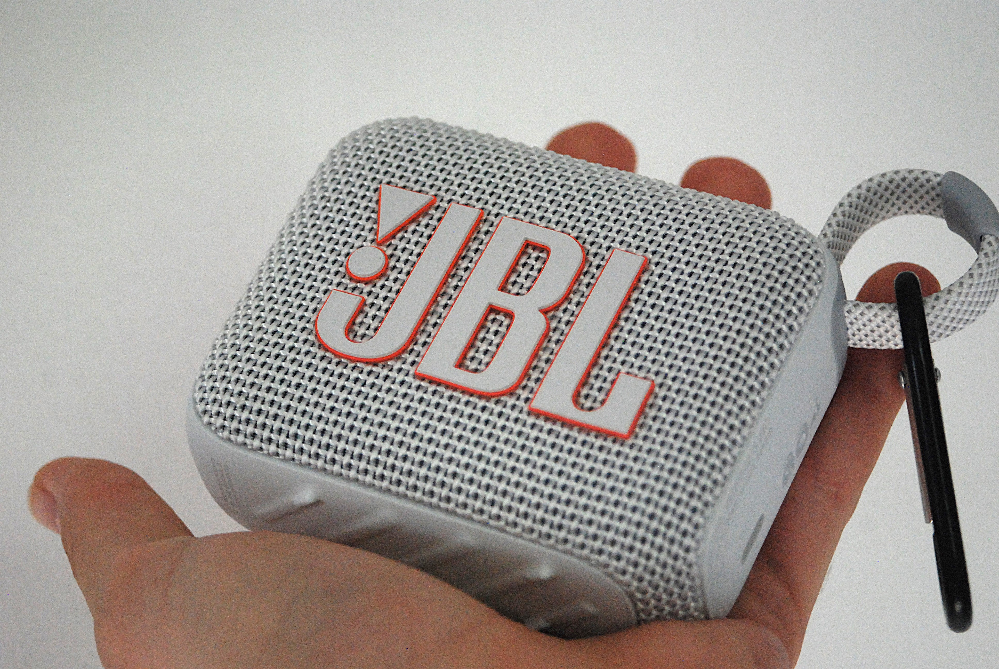
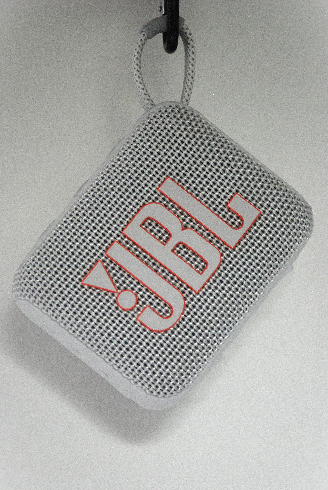

Test: JBL GO 4
26 of May 2025
The JBL GO 4 is a small factor speaker from JBL

It have a 7 hours battery life, an IP67 for water and dust resistance. It charges via an USB-C port, and the charging time is around 3 hours. All of those information are from the official JBL website. Now time to my own test and experience, and are those affirmations true?

My first use was music in shower and "pocket music", I had previously a JBL BoomBox 1, and still have it. It's biggest flaws were the size and weight, so I wanted a smaller speakker that could be way more portable for my needs.

Let's talk about the design of the speaker, I choosed the white color but there are many colors available. The mesh design, is great, it pair quite nicely with a mesh USB-C cable, like the one from Apple or Ikea. And like always the mesh texture give a premium feel and is always nice to the touch !